Le carnet de douleur de vos patients, et un rapport que vous lisez en deux minutes.
OUCH est un carnet de douleur libre et gratuit, pour la fibromyalgie et les autres douleurs chroniques. Le patient note sa journée en moins d’une minute sur son téléphone ; ses données restent sur l’appareil. Quand il le souhaite, il en tire un rapport pour la consultation, qui décrit sans interpréter.
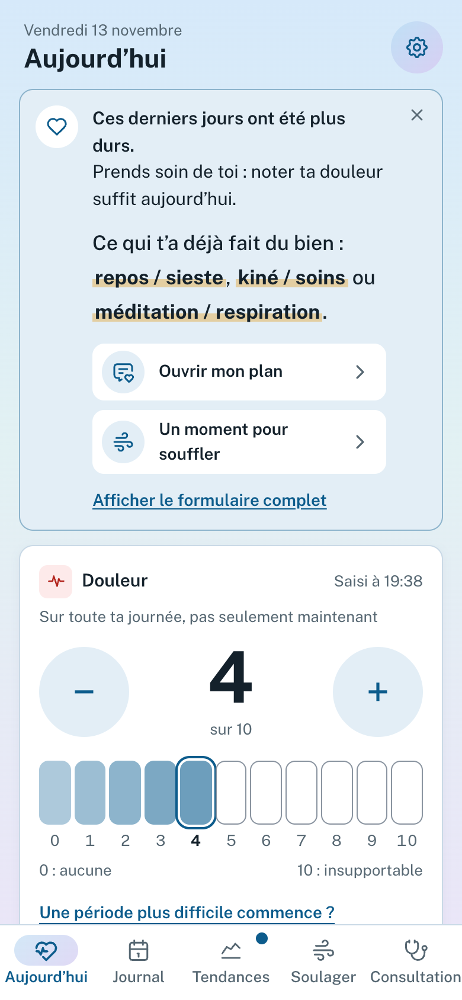
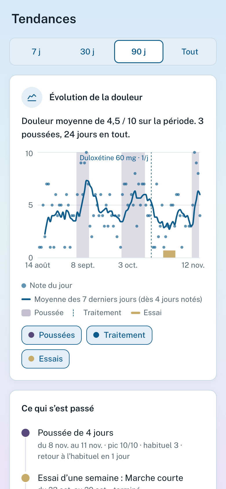
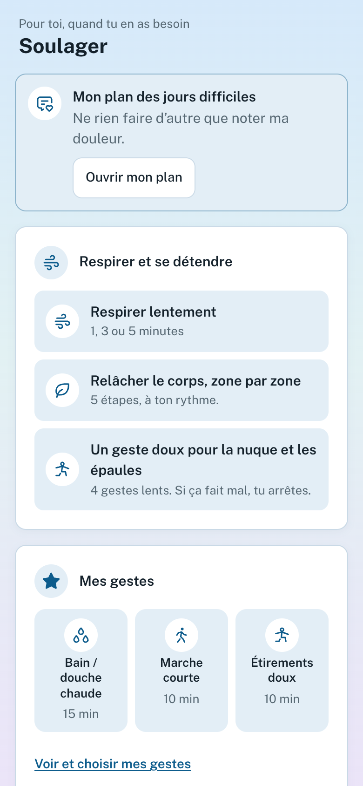
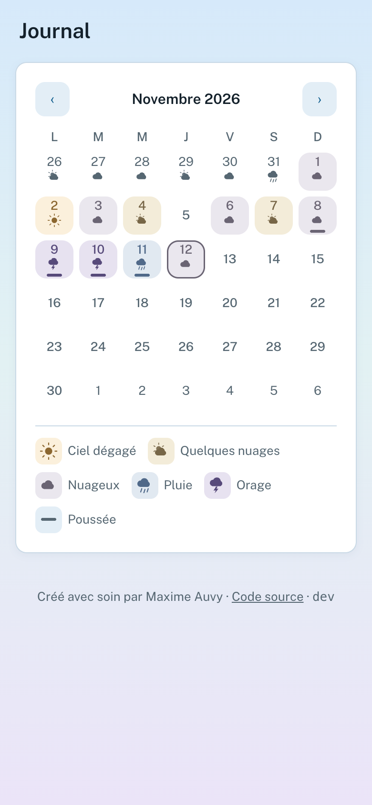
Décrit d’après la version 0.12.1 · 13 novembre 2026. Captures d’écran du mode démonstration : données fictives. OUCH n’est ni un dispositif médical ni un avis médical ; les données sont auto-déclarées par le patient et non vérifiées. Logiciel libre, licence CeCILL v2.1.
maxauvy.github.io/OUCH
1 · En bref
Pourquoi un carnet, et pourquoi celui-ci
Le constat
« Comment ça s’est passé depuis la dernière fois ? » Pour une douleur qui varie d’un jour à l’autre, la réponse vient de la mémoire, et la mémoire d’une semaine est moins fidèle que celle d’une journée[6]. Les jours difficiles, ceux qu’on voudrait pouvoir montrer, sont aussi ceux où l’on n’a pas la force de remplir un carnet.
Les carnets existants sont souvent fermés, ou pénibles à remplir quand on n’en peut plus. OUCH prend le parti inverse : de gros boutons, presque rien à remplir, et aucune donnée qui quitte l’appareil sans que la personne l’ait décidé.
La réponse, en trois principes
Simple. Seule la douleur, de 0 à 10, suffit pour qu’une journée compte. Les jours les plus durs, l’écran s’allège.
Privé. Pas de compte, pas de serveur : le journal reste sur le téléphone. Le patient décide de ce qu’il partage, et avec qui.
Descriptif. Il décrit : moyennes, médianes, évolution, jours plus difficiles que d’habitude. Il ne pose pas de diagnostic, ne conseille aucun traitement et ne fait jamais passer un rapprochement pour une cause.
Repérer les jours nettement au-dessus du niveau habituel du patient (« poussées »).
Citer la source de chaque seuil, et dire quand il est extrapolé.
Aider le patient à préparer ce qu’il veut vous dire.
Ce que ne fait pas OUCH
Poser un diagnostic ou conseiller un traitement.
Remplacer un questionnaire validé ou votre examen.
Présenter un rapprochement comme une cause.
Envoyer quoi que ce soit sans geste du patient.
Pour qui ?
Pour toute personne qui vit avec une douleur chronique : la fibromyalgie d’abord, et d’autres maladies que le patient déclare (polyarthrite rhumatoïde, spondyloarthrite, rhumatisme psoriasique, endométriose, migraine, lombalgie, sclérose en plaques, douleur myofasciale). L’application s’adapte aux maladies indiquées : elle range les indicateurs en trois niveaux (recommandés, utiles aussi, tous les autres), et tout reste facultatif.
Références numérotées comme dans la note méthodologique d’OUCH : [6] Broderick, rappel d’une journée contre une semaine.
OUCH · guide de présentation pour les professionnels de santé2
2 · Vue d’ensemble
Quatre gestes pour le patient, cinq onglets
1
NoterChaque jour, en moins d’une minute : la douleur, et si l’on veut le sommeil, la fatigue, les zones, les traitements, ce qui a aidé.
2
ComprendreLe journal raconte : courbe, poussées, avant et après un changement de traitement, rapprochements relevés dans ses propres notes.
3
SoulagerUn plan écrit pour les jours difficiles, ses gestes avec un minuteur, une respiration lente. Ni score ni série.
4
Préparer et transmettreRendez-vous, questions, ordonnance ; un rapport pour vous, une fiche pour un soignant qui ne le connaît pas.
Où trouver quoi dans l’application
Onglet
Ce qu’il contient
Ce que cela apporte
Aujourd’hui
Douleur du jour, zones, mesures, traitements, ce qui a aidé, une note ; météo à partager ; page « Enfants »
Patient : une saisie qui tient en une minute, et qui s’allège les jours durs. Vous : des mesures prises au jour le jour, plutôt que reconstituées de mémoire.
Journal
Calendrier du mois, coloré selon la météo de chaque jour, poussées signalées ; chaque journée se corrige
Retrouver un jour précis (« le 9, il y avait de l’orage ») sans chercher dans sa mémoire.
Tendances
Courbe 7, 30, 90 jours ou depuis le début ; ce qui s’est passé ; zones ; traitements ; jours de la semaine ; ce que disent les notes ; comparer deux périodes
Voir l’évolution, les poussées, l’effet apparent d’un changement de dose, sans que l’outil conclue à votre place ni à la sienne.
Soulager
Mon plan des jours difficiles, mes gestes avec minuteur, respiration lente, deux exercices de détente
Une aide disponible hors ligne, que le patient a préparée quand il allait mieux.
Consultation
Rendez-vous et questions, ordonnance, rapport (deux versions), fiche pour un soignant
Arriver avec ce que l’on veut dire, repartir avec ce qui a été dit. Vous : un rapport de 3 à 10 pages à lire en deux minutes.
Le patient garde la main sur tout : ce qui est suivi, ce qui est proposé, ce qui part ou non.
Une règle valable partout
Quand la personne va mal, l’application se tait. Les jours de poussée, l’écran se réduit à la douleur et à un mot bienveillant ; les pistes, les essais et les bilans attendent. Ce qu’il y a à voir les autres jours tient en une ligne discrète (« 2 petites choses pour toi »), sans jamais prendre la forme d’une alerte.
Et aussi : français et anglais, mode sombre, texte qui suit la taille de police du téléphone, verrou par code facultatif, installation sur l’écran d’accueil et usage hors connexion.
OUCH · guide de présentation pour les professionnels de santé3
3 · Noter sa journée
L’onglet « Aujourd’hui » : une minute suffit
Un jour difficileL’écran s’allège : un mot doux, ce qui a déjà fait du bien, la douleur seule.
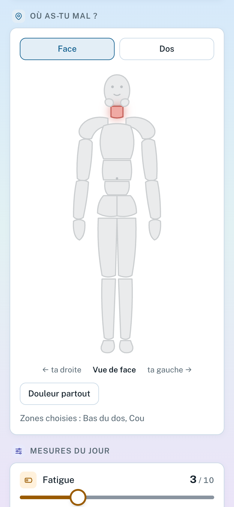
Où as-tu mal ?Face et dos : une grande région, puis la partie et le côté.
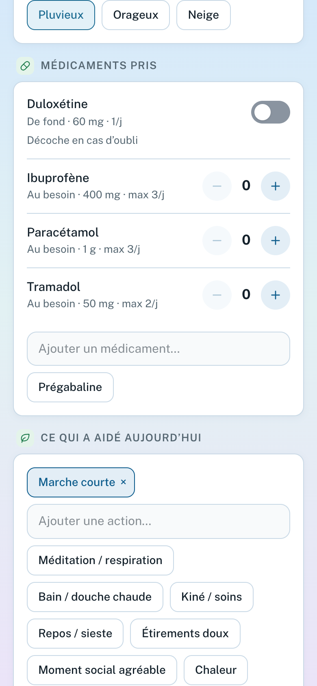
Traitements et ce qui a aidéFond coché d’office ; au besoin : prises, soulagement, effets indésirables.
Ce que le patient peut noter
Douleur
0 à 10, onze cases à toucher. Seule saisie dont une journée a besoin[1][3] ; la note porte sur toute la journée, et non sur « maintenant ».
Zones
25 zones sur une silhouette, dont les 19 régions que vous connaissez (WPI) ; « douleur partout » possible.
De fond ou au besoin, dose, changements, arrêts ; doses oubliées ; soulagement ; effets indésirables datés.
Ce qui a aidé
Marche courte, bain ou douche chaude, méditation… des approches que le patient repère lui-même.
Facultatif
Météo du jour (géolocalisation ou à la main), cycle, une note.
Pensé pour les jours où l’on n’en peut plus
Une poussée repérée, ou une « période plus difficile » que la personne note elle-même : l’écran se réduit, l’app ne propose rien d’autre qu’un mot bienveillant. Les deux restent à part : OUCH ne mélange pas ce que l’on vit et ce que montrent les niveaux de douleur.
Un jour manqué n’est jamais un échec : il n’est jamais comblé dans les calculs. Si la veille n’a pas été notée, l’app propose d’y revenir, une fois, sans reproche.
Une journée écrite après coup le dit (« saisi jeudi à 09:12 »), et le rapport vous en donne le nombre.
Un assistant de démarrage, entièrement facultatif
Maladies suivies, prénom, traitements, rappel quotidien. Selon les maladies indiquées, il range les indicateurs en trois niveaux. Quatorze indicateurs plus récents s’y ajoutent : raideur au réveil, réveils à cause de la douleur, gêne dans les gestes, articulations, règles, mal de tête, jambe, spasmes… Relus rapidement en octobre 2026 par un kinésithérapeute, une psychologue de la douleur et une médecin généraliste, ils restent des échelles ou des réponses simples non validées, sans score ni seuil.
OUCH · guide de présentation pour les professionnels de santé4
4 · Comprendre
Journal et Tendances : ce que le carnet raconte
JournalUn mois à la fois ; poussées signalées.Évolution de la douleurMoyenne sur 7 jours, poussées ombrées, changements de traitement en trait pointillé.
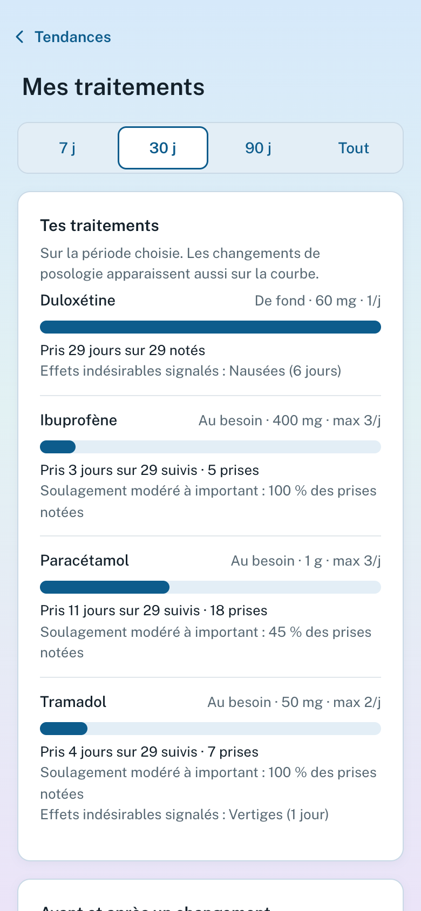
Mes traitementsPrises, soulagement, effets notés.
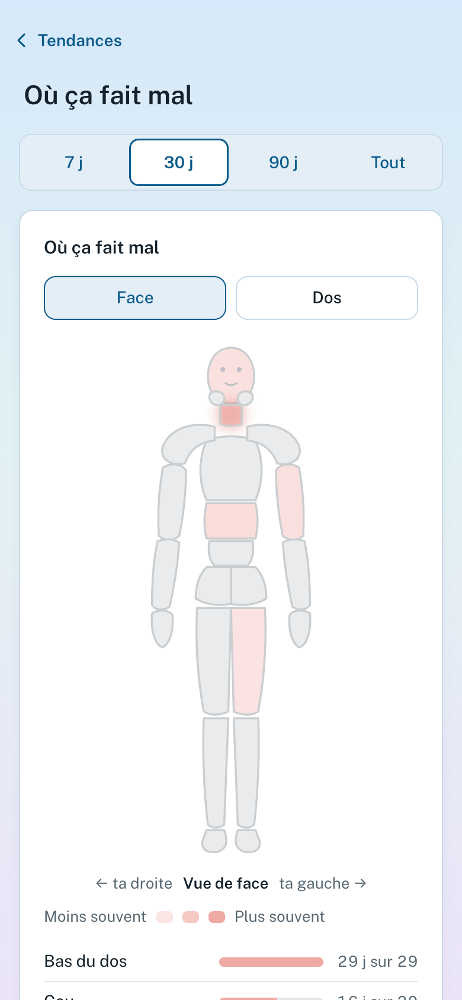
Où ça fait malLes zones citées, semaine après semaine.
Ce que la personne y voit
Pour ma consultation : douleur moyenne, poussées, zone la plus signalée, dernier changement de traitement.
La courbe sur 7, 30, 90 jours ou depuis le début, avec des calques (poussées, traitements, essais) et une frise « Ce qui s’est passé ».
Les traitements : usage, soulagement déclaré, effets indésirables ; les changements de dose apparaissent sur la courbe. Un avant-après est comparé à l’écart habituel de la personne, pour ne pas lire un hasard comme un effet.
Les jours de la semaine où ça va le mieux ou le moins bien, avec la bande que le hasard suffit à produire.
Comparer deux périodes : les 30 derniers jours, depuis la dernière consultation, ou deux périodes au choix.
Après tes jours actifs : si les lendemains des jours les plus actifs ont été plus difficiles que d’habitude, mis à côté de ce que le hasard donnerait.
« Ce que tes notes racontent »
Le sommeil, le stress, l’activité de la veille, ce qui a aidé : une piste à la fois, avec les deux moyennes et le nombre de jours. La personne peut la garder pour sa consultation, l’écarter, ou essayer pendant une semaine une action qu’elle a elle-même notée : l’app met côte à côte les jours avec et sans, en disant que c’est peu pour conclure.
Des rapprochements, jamais des causes. Ce sont des associations relevées dans ses propres données, avec leur limite affichée (« ça va peut-être dans les deux sens »). Rien ne s’affiche pendant une poussée, et un seul réglage, « Suggestions », coupe le tout.
Définition d’une poussée (propre à OUCH)
Au moins 3 jours consécutifs à plus de 2 points ou 30 % au-dessus de la médiane des 28 jours précédents, et au moins 4/10. Il n’existe pas de définition consensuelle : ces seuils viennent d’études sur l’amélioration, appliqués à une aggravation (extrapolation, dite comme telle). C’est le point où votre regard est le plus utile.
OUCH · guide de présentation pour les professionnels de santé5
5 · Soulager
L’onglet « Soulager » : des gestes, sans rien promettre
SoulagerMon plan, respirer et se détendre, mes gestes.
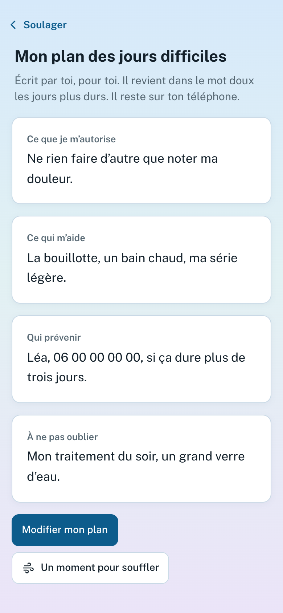
Mon plan des jours difficilesQuatre lignes écrites à l’avance, lues en grand.
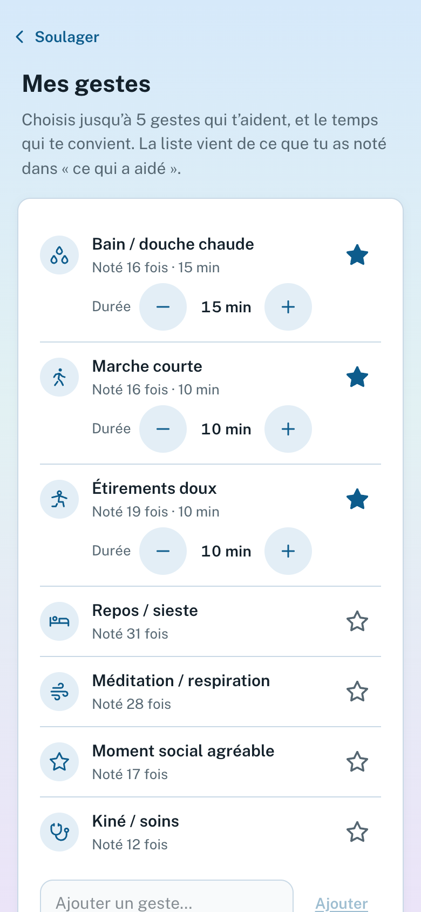
Mes gestesJusqu’à cinq, chacun avec le temps de minuteur choisi par la personne.
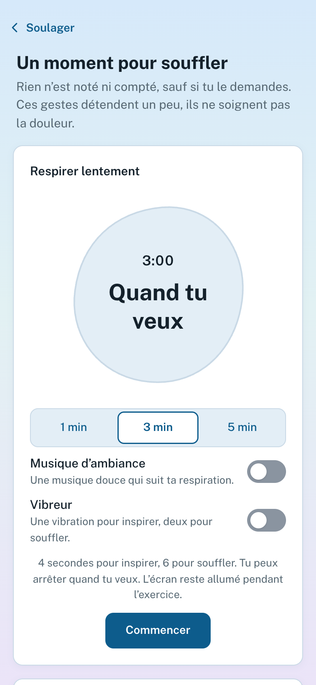
Un moment pour soufflerRespiration lente, 1, 3 ou 5 minutes, hors ligne.
Ce que contient l’onglet
Mon plan des jours difficiles : ce que je m’autorise, ce qui m’aide, qui prévenir, à ne pas oublier. Écrit par la personne quand elle va mieux, lu en grand quand elle va moins bien. Du texte qu’elle a tapé : rien n’est deviné ni envoyé.
Mes gestes : les aides que la personne note le plus souvent (bain ou douche chaude, marche courte, étirements…), avec un minuteur dont elle choisit la durée ; l’app n’en recommande aucune.
Respirer lentement : un niveau d’eau qui monte et descend (4 secondes pour inspirer, 6 pour souffler). Vibreur et musique d’ambiance facultatifs.
Deux exercices lus pas à pas : relâcher le corps zone par zone, un geste doux pour la nuque et les épaules.
Et dans la liste « Pour toi »
« Bouger, ce que disent les études » : rappelle, une seule fois, ce que disent des sources (EULAR, Cochrane, revues) sur l’exercice, pour les maladies suivies où elles existent, chacune avec sa référence. Rien pour l’endométriose, la sclérose en plaques et le rhumatisme psoriasique : les sources que nous avons lues ne permettent pas d’y conclure clairement. Renvoie au kiné ou au médecin pour le choix et la dose.
Prises oubliées : après 3 oublis notés sur un traitement de fond en 14 jours, un mot sans jugement qui évoque un pilulier ou un rappel, et renvoie au médecin ou au pharmacien.
Pression qui baisse demain : facultatif, éteint par défaut ; seulement si le carnet de la personne montre que ces jours-là ont été plus durs que le hasard ne le donne.
Un garde-fou : l’écran précise que ces gestes détendent un peu mais ne soignent pas la douleur. Les preuves sur la respiration lente et la douleur sont faibles ou mitigées, et le rythme est un repère d’OUCH, sans validation clinique. Il n’y a ni score ni série : rien à perdre. Les gestes pour la nuque n’ont pas encore été relus par un kinésithérapeute.
OUCH · guide de présentation pour les professionnels de santé6
6 · Préparer et transmettre
L’onglet « Consultation » : arriver préparé, repartir avec l’essentiel
Fiche pour un soignantUne page pour quelqu’un qui ne connaît pas la personne.
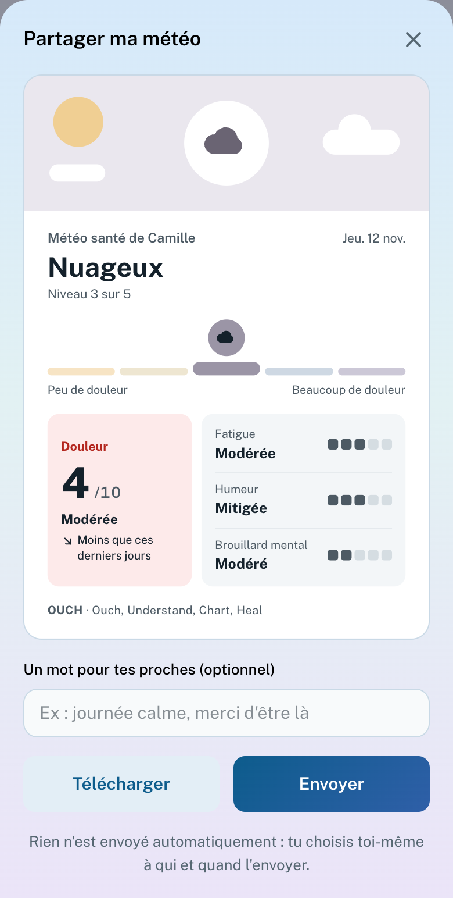
Météo du jour à partagerUne image pour les proches ; rien n’est envoyé seul.
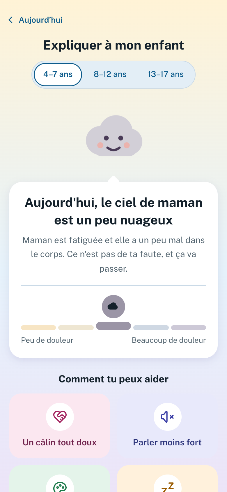
Expliquer à son enfantDes mots simples, trois âges.
Avant, pendant, après le rendez-vous
Avant : la personne note la date, ses questions et ce dont elle veut parler en priorité. Une carte douce de la page du jour le rappelle quinze jours avant.
Pendant : elle vous montre le rapport (ou l’imprime). Ses questions figurent en tête du rapport.
Après : elle écrit ce que vous avez dit et, si une ordonnance a été remise, sa durée : l’app prévient une semaine avant la fin (ou deux), sans rien calculer à partir des prises.
La fiche pour un soignant qui ne connaît pas la personne
Pour les urgences ou un nouveau médecin : maladies suivies et leur statut, traitements en cours, effets indésirables notés, douleur habituelle des 90 derniers jours, zones les plus signalées, ce qui soulage. La personne y ajoute elle-même ses allergies, des personnes à joindre et un mot libre : rien n’est deviné. À montrer sur l’écran (le numéro se touche pour appeler), imprimer ou enregistrer en PDF, en français ou en anglais.
Autour de la consultation
Météo du jour à partager : les mesures du jour résumées en une image, du ciel dégagé à l’orage ; un petit mot ; la personne l’envoie elle-même à ses proches.
Expliquer à son enfant : la météo du jour en mots simples (« le ciel de maman est un peu voilé »), des idées pour aider, et une explication de la maladie pour trois âges (4–7, 8–12, 13–17 ans).
Sauvegarde : un fichier chiffré avec un mot de passe de son choix, qu’elle réimporte pour changer d’appareil ; l’app rappelle de la faire quand il y a quelque chose à perdre.
Ce que cela change pour vous
Le patient arrive avec ses questions déjà posées, ce qu’il a retenu de la dernière fois, et une ordonnance dont il connaît la date de fin. Le temps de consultation sert alors davantage à décider qu’à reconstituer.
C’est une hypothèse de conception, non un résultat : aucun test auprès de soignants n’a encore été mené (voir page 11).
OUCH · guide de présentation pour les professionnels de santé7
7 · Le rapport
Le rapport pour le médecin traitant : 3 à 5 pages, à lire en deux minutes
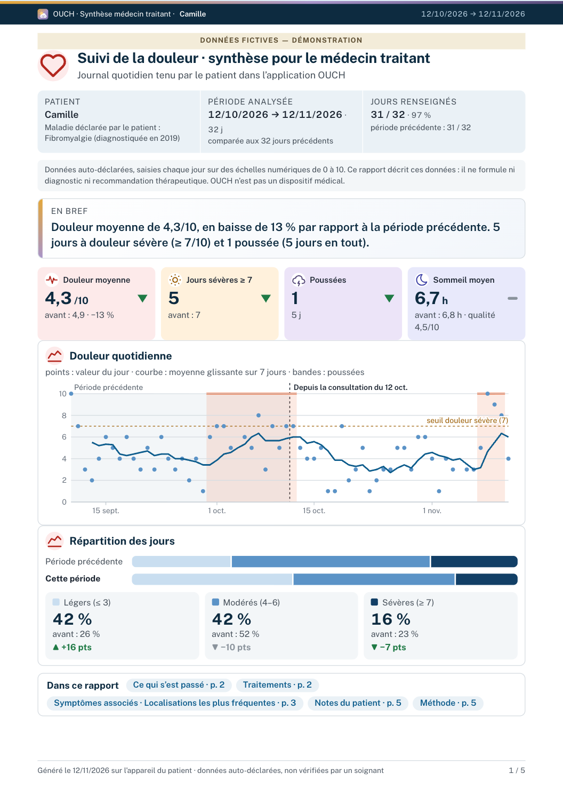
Page 1 d’un rapport généré avec les données fictives du mode démo.
1Qui, quand. Maladies déclarées (diagnostiquée ou suspectée), période analysée, jours renseignés. Les jours non renseignés ne sont jamais comblés.
2« En bref ». Une phrase : douleur moyenne, évolution face à la période d’avant, poussées, jours sévères.
3Chiffres clés avec une flèche de tendance : douleur moyenne, jours sévères (≥ 7), poussées, sommeil moyen.
4La courbe quotidienne, sa moyenne glissante sur 7 jours, les poussées ombrées, et le rendez-vous précédent.
5Répartition des jours (légers ≤ 3, modérés 4–6, sévères ≥ 7), comparée à la période précédente.
6Ce que le patient a ajouté : ses questions et sa priorité, sa note après la dernière consultation (qu’il peut écarter), ses périodes difficiles, deux périodes comparées.
7Ce que le patient a remarqué : les pistes gardées et ses essais d’une semaine, sans lien de cause.
Au fil des pages
Ce qui s’est passé
Frise des poussées, des essais, des changements de traitement.
Traitements
Posologie, jours de prise, prises au besoin, soulagement déclaré, effets indésirables, changements de fond avec l’avant-après.
Symptômes associés
Chaque indicateur suivi, avec la valeur avant, pendant la période, l’écart et la tendance ; localisations les plus fréquentes.
Le rapport décrit les données sans les interpréter, et ses seuils citent leurs sources (IMMPACT, HAS et d’autres travaux publiés, résumés dans Réglages › À propos › Sources scientifiques). Le PDF est fabriqué sur le téléphone : le nom saisi n’est pas enregistré. Il se lit en français ou en anglais. Une fiche d’une page, « Lire un rapport OUCH », aide à lire un premier rapport.
OUCH · guide de présentation pour les professionnels de santé8
7 · Le rapport (suite)
Le rapport détaillé pour un centre douleur : 6 à 10 pages
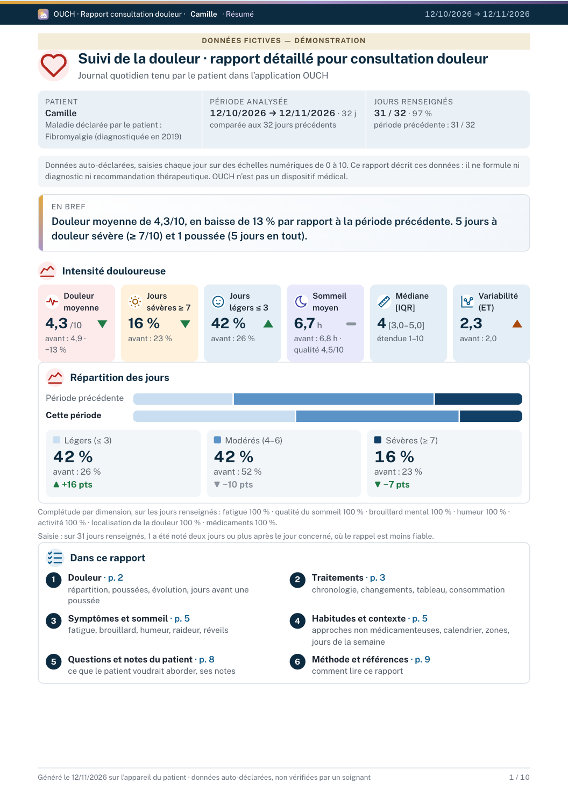
Résumé puis sommaire des six parties.
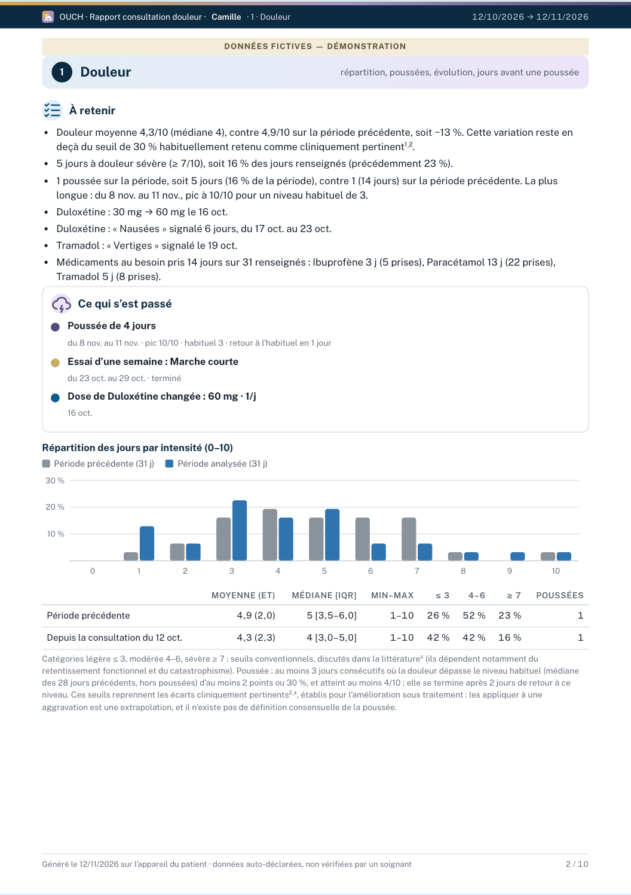
1 · Douleur statistiques détaillées, répartition.
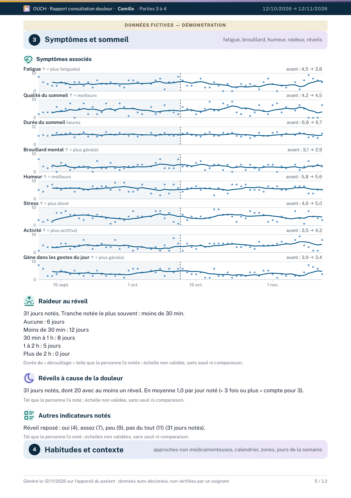
3 · Symptômes et sommeil courbes par symptôme.
Six parties numérotées
1
Douleur : répartition, évolution, jours plus difficiles (poussées) et leurs 3 jours précédents.
2
Traitements : chronologie, consommation d’antalgiques semaine par semaine, changements de fond.
3
Symptômes et sommeil : fatigue, qualité du sommeil, brouillard mental, humeur, stress, activité.
4
Habitudes et contexte : approches non médicamenteuses, calendrier, météo, zones, jours de la semaine.
5
Questions et notes du patient.
6
Méthode et références : chaque seuil, sa source, ses limites.
Quelle version pour qui ?
Médecin traitant
Centre douleur
Longueur
3 à 5 pages
6 à 10 pages
Contenu
« En bref », chiffres clés, courbe, traitements
Résumé puis six parties, statistiques détaillées, facteurs associés
Dans les deux
Maladies déclarées · période comparée à la période d’avant · jours de la semaine avec bande de hasard · avant et après un changement de traitement, sans conclure · pistes et essais du patient · ses questions · méthode
Sans interprétation. Le rapport décrit ce que la personne a noté et ne dit pas pourquoi deux périodes diffèrent. Les définitions propres à OUCH, comme celle d’une poussée, sont signalées comme telles.
Ce qui est dans le rapport, et seulement dans le rapport
La consommation d’antalgiques, les facteurs associés (corrélations de rang, avec leur force et le nombre de jours) et la douleur par jour de la semaine avec sa bande de hasard sont pensés pour un regard clinique, et se lisent dans ce rapport.
Un repère rédigé sur la céphalée par abus de médicaments reprend des repères publiés (avec sa source), sans calcul ni conclusion.
OUCH · guide de présentation pour les professionnels de santé9
8 · À quoi cela peut servir
Ce que cela peut changer, pour qui
Voici ce que l’outil est conçu pour faire. Ce sont des hypothèses : son utilité en consultation n’a pas encore été évaluée, et nous vous proposons justement de l’examiner avec nous.
Pour la personne
Se souvenir : des données plutôt qu’un récit de mémoire.
Repérer, à son rythme, ce qui précède ses poussées et ce qui revient les bons jours.
Avoir un plan écrit à l’avance pour les jours difficiles.
Préparer ses questions, et arriver avec elles.
Choisir ce qu’elle partage, et avec qui.
Pour le médecin traitant
Une comparaison avec la période précédente, d’un coup d’œil.
Les jours nettement plus douloureux que d’habitude, et leur contexte.
Les traitements pris, le soulagement et les effets déclarés.
Un appui pour l’anamnèse, qui n’est pas une aide à la décision.
Pour le centre douleur (CETD)
Statistiques détaillées par parties numérotées, avec méthode et références.
Les pistes et essais de la personne, présentés comme tels.
Pour les autres soignants
Kiné, activité physique adaptée : ce que la personne note de l’activité et de la douleur du lendemain.
Psychologue, infirmier·e : sommeil, humeur, stress ; périodes difficiles que la personne a nommées.
Pharmacien : un historique des prises et des effets, une ordonnance dont la fin est notée.
Urgences, nouveau médecin : la fiche d’une page.
En consultation, concrètement
Sans carnet
Avec le rapport OUCH
« Comment ça va depuis la dernière fois ? »
Un souvenir global, souvent teinté par les derniers jours.
Une moyenne, une comparaison à la période d’avant, des jours difficiles datés.
« Le changement de dose a-t-il aidé ? »
Une impression.
L’avant et l’après sur la courbe, avec ce que le hasard suffit à produire.
« Qu’aviez-vous prévu de me demander ? »
Oublié devant la porte.
Les questions, en tête de rapport.
« Quand finit l’ordonnance ? »
À retrouver.
Notée par le patient, avec un rappel une semaine avant.
OUCH · guide de présentation pour les professionnels de santé10
9 · Confiance et limites
Ce qui est solide, et ce qui ne l’est pas encore
Vie privée
Pas de compte. Le journal est dans le navigateur du téléphone, en clair : un verrou par code facultatif cache l’écran, il ne chiffre rien. Seules les sauvegardes exportées sont chiffrées (AES-256-GCM, mot de passe de la personne : sans lui, une sauvegarde est perdue).
Ce qui sort de l’appareil
Rien sans geste de la personne, sauf : la météo automatique (facultative, position à Open-Meteo), un signal anonyme « actif cette semaine » (sans donnée de santé, que la personne peut couper), et, en accès anticipé, une sauvegarde chiffrée vers un Dropbox, désactivée par défaut.
Libre et testé
Logiciel libre (CeCILL v2.1), code public. Plus de 600 tests automatiques vérifient les calculs et l’application. Pas d’audit de sécurité externe à ce jour.
Cadre
OUCH n’est pas un dispositif médical : il décrit ce que la personne note, ne pose pas de diagnostic, ne recommande pas de traitement. Cette position est argumentée, points faibles compris, dans la documentation. Deux fonctions s’en approchent (la carte « Bouger », qui propose une marche courte, et le mot sur les prises oubliées) : elles figurent parmi celles qu’un expert regarderait d’abord.
Poussées, avant-après, pistes : règles écrites et testées sur des cas construits ; jamais comparées à des poussées identifiées par des patients ou des soignants.
Utilité en consultation : aucun test mené à ce jour.
Limites à garder en tête
Les données sont auto-déclarées et non vérifiées. Le statut d’une maladie (« diagnostiquée », « suspectée ») est déclaratif.
Un patient dont la douleur est constamment élevée (au-dessus d’environ 7,7/10 d’habitude) ne verra jamais de poussée : le seuil dépasse 10. Cela ne veut pas dire qu’il n’en a pas.
Les rapprochements entre sommeil, stress, activité et douleur ne corrigent pas les comparaisons multiples : une fausse piste reste possible.
L’effet du carnet sur la personne (chercher des causes, s’y fixer, anxiété) n’a pas été étudié. C’est pourquoi il n’y a ni série ni score, et un seul réglage pour tout couper.
Les textes des fonctions les plus récentes (rythme, « Bouger », gestes de la nuque) sont à relire par un professionnel.
Détail complet : note méthodologique (14 pages), statut de validation, cadre réglementaire et dictionnaire des données, dans le dossier « soignants » du projet.
OUCH · guide de présentation pour les professionnels de santé11
10 · Pour la suite
Essayer en deux minutes, et nous aider
Essayer
1
Ouvrir le mode démoSur un téléphone ou un ordinateur : maxauvy.github.io/OUCH/?demo (ou le QR ci-contre, puis « Découvrir avec un exemple »). Un historique fictif de 90 jours s’installe, avec une visite guidée ; « Quitter » l’efface.
2
Générer un rapportOnglet Consultation › « Préparer le rapport » › médecin traitant ou centre douleur.
3
Installer sur l’écran d’accueilPour une app qui s’ouvre en un geste et marche hors ligne.
Rien de ce qui est saisi ne quitte l’appareil. Les données de démonstration sont fictives.
maxauvy.github.io/OUCH
Vous pouvez aider, dans l’ordre où cela coûte le moins de temps
1 · Lire
La note méthodologique, et répondre, même brièvement, à ses dix questions : la définition d’une poussée, les catégories, ce que vous ne voulez pas voir dans un rapport.
2 · Dire
Un libellé qui prête à confusion, une donnée qui manque, un seuil que vous contestez : formulaire « Retour clinique », sans compte à créer.
3 · Essayer
Avec quelques patients volontaires, 4 à 6 semaines, puis dire ce que le rapport a changé, ou non. Un protocole de pilote existe.
4 · Relire
Les références : une étude manquante ou mal résumée se signale de la même façon.
Documents disponibles
Plaquette (2 pages)
Le patient, la pertinence, le rapport, en un coup d’œil.
Lire un rapport OUCH (1 page)
À glisser avec un rapport reçu pour la première fois.
Note méthodologique (14 pages)
Chaque calcul, seuil, source, limite, et dix questions qui vous sont posées.
Dictionnaire des données, statut de validation, cadre réglementaire, protocole de test
Dans le dossier « soignants » du projet.
Aucune donnée de patient identifiable dans un retour : l’historique de démonstration suffit pour illustrer. Contact : maxime@open-freax.fr (n’y joignez aucune donnée de patient). Faille de sécurité : signalement privé décrit dans SECURITY.md.
OUCH · guide de présentation pour les professionnels de santé12
Annexe · Pour la personne qui présente
Fiche animateur : une séance de 45 minutes
À détacher. Le diaporama suit ce déroulé ; ses notes d’orateur (touche N) reprennent chaque point.
Durée
Temps
Contenu et diapositives
5 min
Le constat
La mémoire d’une semaine, les jours où l’on ne peut pas écrire. Demandez à la salle : « Combien de vos patients tiennent déjà un carnet ? Que vous en reste-t-il en consultation ? » (diapos 2 à 4)
5 min
OUCH en bref
Trois principes, ce que fait et ne fait pas OUCH. Insistez : descriptif, privé, simple. (diapos 5 à 7)
12 min
Démonstration en direct
Mode démo sur un téléphone : Aujourd’hui (jour difficile, zones, traitements), Tendances (courbe, poussées, pistes), Soulager, Consultation. Les diapositives 8 à 18 servent de filet si le réseau fait défaut. (diapos 8 à 18)
8 min
Le rapport
Faire lire la page 1 du rapport à la salle en deux minutes, puis leur demander ce qui manque, ce qui gêne. (diapos 19 à 21)
5 min
Confiance et limites
Vie privée, cadre réglementaire, ce qui n’est pas validé. Ne rien atténuer : c’est ce qui rend l’outil crédible. (diapos 22 à 24)
10 min
Discussion
Les questions ci-dessous ; recueillir les retours dans le formulaire pendant la séance. (diapos 25 à 27)
Questions à poser à la salle
Que voudriez-vous voir en premier sur un rapport ? Qu’y supprimeriez-vous ?
La définition d’une poussée (3 jours à plus de 2 points ou 30 % au-dessus de l’habituel) a-t-elle un sens pour vous ?
Les pistes et essais d’une semaine : aide ou risque d’orienter la discussion vers une cause ?
Pour quels patients ne proposeriez-vous pas un carnet quotidien ?
Quelle version de rapport utiliseriez-vous : 3 à 5 pages, 6 à 10 pages, ni l’une ni l’autre ?
Avant la séance
Ouvrir maxauvy.github.io/OUCH/?demo sur un téléphone, passer la visite, et vérifier le réseau.
Préparer un rapport médecin traitant et un rapport centre douleur en PDF, au cas où.
Imprimer ce guide (recto-verso), la plaquette et « Lire un rapport » pour chaque participant.
Rappeler d’entrée : données fictives, ni dispositif médical ni avis médical.
Les phrases à garder
« Le rapport décrit, il n’interprète pas. » · « Quand la personne va mal, l’appli se tait. » · « Un rapprochement n’est pas une cause. » · « Ce n’est pas validé, et nous le disons clairement. »
OUCH · guide de présentation pour les professionnels de santé13
 maxauvy.github.io/OUCH
maxauvy.github.io/OUCH